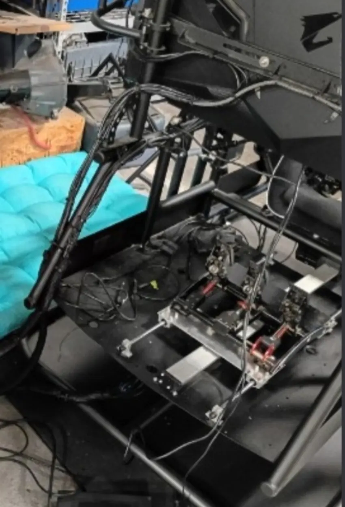

OBSERVED
Known from the repair
Something seen in a photograph, identified on equipment, or tested during the troubleshooting.
CASE ID / SC-2026-001 STATUS: PARTIALLY COMPLETE
The engineering underneath the story. What we saw, what we verified, what we inferred, and what remained unresolved.
← Return to the chronicleSomething seen in a photograph, identified on equipment, or tested during the troubleshooting.
A logical explanation that fits the evidence without claiming certainty.
A subsystem still needing verification, not an achievement we quietly invent.
A conceptual map of the simulator, not a manufacturer wiring diagram.
A momentary button signal reaches the PC's front-panel header.
POWER SW → MSI JFP1Windows runs the simulator software and coordinates the attached devices.
PC · WINDOWS · IRACINGThree physical monitors represent one continuous virtual field of view.
LEFT · CENTER · RIGHTDriver inputs and steering feedback bring hands and feet into the loop.
SIMUCUBE 2 PRO · FANATECMechanisms and control electronics move the cockpit as it simulates forces.
SIMCRAFT STRUCTUREThe intended sound path was identified, but its speaker-wire runs still needed tracing.
PYLE / PTA66BT? · PENDINGRECORD / 01
OBSERVED No lights, fan noise, or start response. A two-socket POWER SW cable was disconnected near the MSI JFP1 front-panel header.
INFERRED The larger replacement board/enclosure might have disturbed the old switch wire during installation.
RESULT Reconnecting the start-switch path was the critical breakthrough; the PC subsequently operated.
Never assume that a remembered pair of pin numbers applies to a different board. Confirm the exact model's labeled header diagram and disconnect mains power before handling internal connectors.
RECORD / 02
OBSERVED The physical left-center-right display order was restored from a misordered Windows configuration.
In iRacing, the setup used three flat screens and three projections. During calibration, entered values included 37-inch screen width, 33-inch viewing distance and 60° side-screen angle.
CONTEXT These were working setup values, not certified monitor dimensions or recommended defaults for all rigs. A small vertical offset was noticed and not conclusively eliminated.
RECORD / 03
OBSERVED A Simucube 2 Pro wheelbase was detected. The Fanatec ClubSport pedals responded through the Windows game-controller test, joy.cpl.
The frame is marked SimCraft. The platform was later reported calibrated and working. The precise SimCraft model has not been established.
UNVERIFIED Observing an emergency-stop button close or pause software did not establish that the mechanical actuator safety-stop path had been independently tested.
RECORD / 04
PENDING A Pyle amplifier, apparently model PTA66BT, was identified, and multiple loose speaker wires remained in an opaque cable bundle.
The intended signal path was Sound Blaster Z SE → Pyle amplifier → passive speakers. The actual terminals, speaker identities, polarity and wiring were not yet documented.
Speaker terminals must be identified and the amplifier powered off before reworking wiring. Never connect speaker outputs directly to a PC's line-level audio jack.
Under the OMP seat and three-screen cockpit lies an intricate network of brackets, tubular members, pedals, and actuated linkages. The photo was the most satisfying kind of documentation: evidence that the machine was more complicated—and more interesting—than the first diagnosis suggested.
View the photo archive ↗
PRACTICAL LESSON
Test one hypothesis at a time. Separate observation from inference. Keep people and pets clear of a moving platform. Verify physical emergency stops independently of what software displays. And when a machine is silent, remember the humble button that tells it to begin.